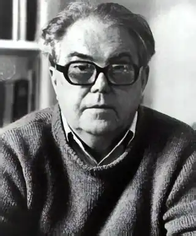
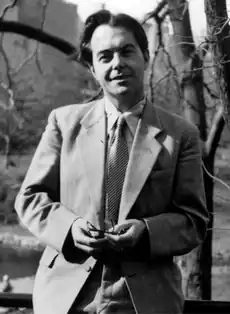

МАКС ФРІШ
(1911 — 1991)
Швейцарський прозаїк, драматург і публіцист Макс Фріш народився 15 травня 1911 року в Цюріху. Його батько, архітектор за професією, був вихідцем з Австрії. Мати була якийсь час гувернанткою в будинках відомих російських аристократів. Із предків Фріша, який мав цілком добропорядний з буржуазної точки зору родовід, єдиним ізгоєм був дід Макса по матері, котрий називав себе художником. У 1924 році Макс вступив до реальної гімназії в Цюріху. Сам Макс спочатку ріс "звичайнісіньким" хлопчиськом і, як не намагалися батьки прилучити його до наук і муз, усіляко перешкоджав їхнім просвітительським планам, віддаючи перевагу футболу з однолітками. Перше справжнє потрясіння від спілкування з мистецтвом прийшло лише в шістнадцятирічному віці, викликав його театр. Він згадував: "Постановка "Розбійників", напевно дуже слабка, подіяла так, що я просто не міг зрозуміти, чому дорослі, у яких достатньо грошей і немає уроків, не ходять у театр щовечора". Подив юнака тільки підсилився, коли незабаром йому довелося побачити драму, у якій діяли люди в сучасних костюмах. "Отже,— осінило його,— писати п'єси можна й у наш час!". Невдовзі наслідки цього відкриття виявилися, і відомий режисер Макс Рейнгардт змушений був повертати юному драматургові один рукопис за одним, супроводжуючи їх традиційними порадами не впадати у відчай і працювати далі. Світ не квапився визнати юний талант. "Єдине, що він визнавав — це диплом. Університет був неминучий". Два роки М. Фріш провчився на філологічному факультеті Цюріхського університету. "Моєю спеціальністю була германістика. Значно ближчими до безпосередньої таємниці життя здавалися мені інші лекції. Професор Клерик, який пізніше заподіяв собі смерть, показував нам людське існування в дзеркалі його злочинних пристрастей. У гірській височині, удалині від нашого сумління велично стояв старий Вьольфлін; стискаючи в руках свою тростину, як спис, він розвивав основи навчання, прибраного в мармур". У цілому університет сприймався як "магазинне звалище різних предметів, позбавлених внутрішнього зв'язку", але поки що задовольняв М. Фріша. Та коли в 1933 році помер його батько і йому самому довелося заробляти на хліб, він залишив його майже без жалю. Фріш працював журналістом, "описуючи все, що доведеться: новосілля, доповіді про Будду, феєрверки, третьосортні кабаре, пожежі, спортивні змагання, настання весни в зоопарку,— тільки від крематоріїв я відмовлявся". Вільний час від цієї діяльності, пов'язаної із частими поїздками по країні й кількаразовими виїздами за кордон, М. Фріш заповнював роботою над своїм першим романом "Юрг Рейнгарт", що був надрукований в 1934 році. За ним з'явилося оповідання "Відповідь із тиші" (1937). В обох творах відчувається потужний вплив Готфріда Келлера, якого М. Фріш називав "своїм кращим батьком" і під магічною владою якого він перебував довгий час. Обидві публікації разом з іншими численними наслідуваннями автора "Зеленого Генріха", коли побачили світло, були якогось чудового дня спалені рукою автора, що не відала жалю. Здавалося, із творчістю було покінчено назавжди. Двадцятип'ятирічний М. Фріш повертається на студентську лаву — цього разу архітектурного інституту. Через чотири роки він одержує диплом і незабаром виявляється переможцем загальноміського конкурсу на кращий проект відкритого басейну. Захоплений своєю новою професією, М. Фріш уже подумував про власне архітектурне бюро, але його плани порушив несподіваний призов до армії: почалася Друга світова війна. Майже два томливі роки він провів рядовим на швейцарському кордоні. І знову береться за перо. Так з'являються в 1940 році його перші щоденникові нотатки, "Аркуші з речового мішка". Уривчаста й всеохопна манера цих щоденників, що поєднувала миттєві спостереження із глибокими роздумами, багато в чому нагадувала популярні в ті роки твори Андре Жида й Ернста Юнгера, але тематично й змістовно М. Фріш виявив тут уже певну самостійність, принаймні потяг до об'єктивного пізнання світу різко відрізняв його від двох згаданих апостолів суб'єктивізму. Повернення М. Фріша в літературу відбулося на попередній основі, закладеній потужною традицією критичного реалізму. Це підтвердив і роман "Важкі люди" (1943), у якому постає ряд характерних для М. Фріша тем, ще не знайшли в цей ранній період його творчості досить переконливих художніх рішень. М. Фріш працював над цим романом у рік свого одруження з Констанцією фон Мейєнбург, шлюб з якою, хоча й дав життя двом дочкам і синові письменника, але зазнав чимало тяжких криз, що відбилися, на думку критиків, у його творчості. Шлюб був розірваний в 1959 році. Серед численних відгуків на роман був і дуже важливий лист від завідувача літературною частиною Цюріхського драматичного театру Курта Хіршфельда, який пропонував М. Фрішу спробувати свої сили в театрі. Матеріал щойно опублікованого роману був покладений в основу першої п'єси М. Фріша, "Санта Крус" (1944). У наступному році була написана п'єса-реквієм "Знову вони співають", котра першою побачила світло рампи. Незабаром вийшла друком фантастична по-вість-видіння "Бін, або Подорож до Пекіна". Дуже бурхливо й напружено тривають для М. Фріша перші повоєнні роки — "роки після п'ятирічного домашнього полону". Він багато мандрує, спостерігає, міркує. Музеї Венеції змінюються руїнами Берліна, віденська опера — фашистськими концентраційними таборами на території Польщі, де М. Фріш у 1948 році бере участь у Конгресі прихильників миру. Багато творчих та ідейних імпульсів він отримав від спілкування з Бертольтом Брехтом, який спричинив помітний і визнаний вплив на його театр. При всій незаперечній значимості цього впливу, Бертольт Брехт не зміг уберегти М. Фріша від тимчасового песимізму щодо майбутнього плину історії людства, якого зазнало в ті роки багато інтелігентів на Заході. Порятунок від зневіри М. Фріш шукав у роботі, що була для нього спасінням у лабіринті людської знедоленості й покалічених життів. Паралельно з "Щоденником" він працював наддвома п'єсами-"Китайська стіна" й "Коли закінчилась війна". Докладний аналіз слабких місць і прорахунків у цих п'єсах зроблено у дружньому листі Брехта. У 1949році завершилося нарешті будівництво басейну за проектом архітектора М. Фріша. Через два роки, коли був закінчений перший варіант "Графа Едерланда", і М. Фріш одержав річ-try стипендію для стажування в Сполучених Штатах, він назавжди залишив архітектуру, остаточно змінивши креслярську дошку на друкарську машинку. Починаючи з "Дон Жуана, або Любові до геометрії", написаного наполовину в Нью-Йорку, наполовину — в Цюріху (1952) і роману "Штіллер" (1954), М. Фріш усе більше й більше завойовує європейське й світове визнання. Зріла майстерність вимагає досконалості, високої вимогливості до себе. Інтервали між окремими творами М. Фріша постійно збільшуються. За останні п'ятнадцять років він написав лише три п'єси — "Бідерман і палії" (1958), "Андорра" (1961) і "Біографія" (1967) — та два романи: "Гомо Фабер" (1957) і "Нехай мене звуть Гантенбайн" (1964). Називаючи свої п'єси-притчі "моделями", М. Фріш сам становить типову "модель" сучасного популярного письменника — способом життя, суспільним темпераментом, навіть зовнішнім виглядом. Він, як і раніше, відчуває глибоку пристрасть до нових країн і людей, багато подорожує, виступаючи з інтерв'ю й доповідями, у яких вузькопрофесійні питання поступаються значним політичним, філософським, етичним явищам; М. Фріш миттєво реагує на будь-які важливі події, що відбуваються у світі, його оцінки не завжди безперечні, але завжди продиктовані доброю волею. На сторінках "Леттр франсез" і "Вечірньої Москви", "Іноземної літератури" чи "Нью-Йорк тайме" нерідко з'являється його портрет — високе чоло, високо підняті роздумом брови, лукавий прищур уважних очей за скльцями окулярів, незмінна люлька у вольовому роті — обличчя-"модель", типова особистість письменника "постнігілістичної" епохи. У будь-якій статті, нарисові, монографії про М. Фріша, у будь-якій енциклопедичній довідці про нього поряд із загальними міркуваннями про те, що М. Фріш піддає аналізу кризу сучасної західної цивілізації, неодмінно буде названа й така риса, як проблема ідентичності. Зазначена проблема поставлена майже у всіх відомих нам творах М. Фріша. Недосвідчений читач, мало знайомий з духовною ситуацією сучасного Заходу й з інтелектуальними "поверхами" сучасної західної літератури, буде, може, неабияк здивований. А тим часом М. Фріш далеко не перший і не єдиний, зрозуміло, хто цілком самостійно знайшов той болючий нерв нашого століття. Проблема ідентичності нерозривними нитками пов'язана з цілим комплексом проблем буржуазного суспільства новітньої формації, і насамперед з так званим відчуженням особистості. Феномен відчуження, що досяг апогею при фашизмі, своїм корінням сягає в самісіньку природу капіталістичних відносин. Наслідки цього явища позначилися на всіх галузях життя людини, значно видозмінивши його психологічний вигляд. Вузький обрій, периферійність праці людини, відлученої від споглядання широкої перспективи, приводили до фетишизації абстрактностей, до полохливої й боязкої залежності від анонімних сил, персоніфікованих у державі. Слово й діло розділилися, провалля між ними заповнили ілюзії, фантасмагоричні нав'язливі видіння, сомнамбулічні кошмари, що становлять зміст свідомості, ущемленої мерзенністю світобудови. Сейсмографом цих явищ у художній літературі є романи Достоєвського. Ще до цього вони були зафіксовані в трактатах датського філософа К'єркегора, який виявив тенденцію до "масового божевілля", здійсненого сторіччя тому. К'єркегор надав поміченій ним драмі відчуження в душі людини універсальних рис, простежених ним аж до Сократа. Запропонований К'єркегором вихід — прорив до особистого містичного Бога через знаходження власної, що не зводиться до трафарету, індивідуальної екзистенції,— при всій своїй практичній безплідності знайшов відгук серед багатьох дрібнобуржуазних філософів нашого століття. Зосередивши свої спостереження на індивідуумі, замкнувши душею окремої людини суб'єктивну недугу, К'єркегор не зміг виявити причин відчуження.